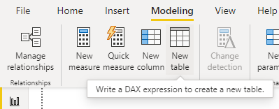
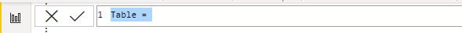
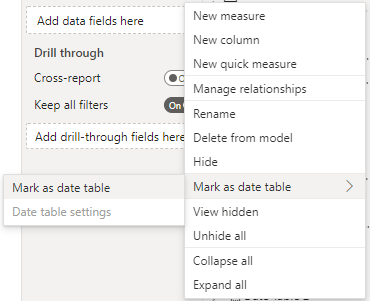
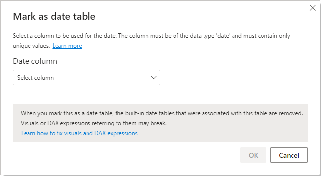
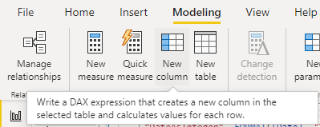
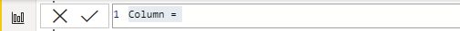

Date Table
What and Why
A date table is a table that has continuous dates for full years, example being 1/1/2017 to 12/31/2022. Although your data may have dates in it, it is likely that those dates have gaps in them for weekends or holidays, an independent date table allows for DAX time intelligence functions to work properly and create accurate results.
Creating a Date Table
One of the easiest ways to create a date table, if you don't have one already built out, is to create a table inside of Power BI using DAX. To do this, in Power BI Desktop click on the Modeling Tab and select New table:

This will open up the table formula bar:

You can either create your own date table using DAX or use the code below as a started for your table. This code will create a table full of dates between the start and end dates. It will also format that date in different ways that can be used in different measures:
Dates =
//Make sure to start as January 1st of a year
VAR _startDate = DATE(2013, 1, 1)
//Make sure to end on December 31st of a year
VAR _endDate = DATE(2022, 12, 31)
RETURN
ADDCOLUMNS(
CALENDAR(_startDate,_endDate),
"DateAsInteger", FORMAT([Date], "YYYYMMDD"),
"YEAR",YEAR([Date]),
"MonthNumber", FORMAT([Date], "MM"),
"YearMonthNumber", FORMAT([Date], "YYYY/MM"),
"YearMonthShort", FORMAT([Date], "YYYY/mmm"),
"MonthNameShort", FORMAT([Date], "mmm"),
"MonthNameLong", FORMAT([Date], "mmmm"),
"DayOfWeekNumber", WEEKDAY([Date]),
"DayOfWeek", FORMAT([Date], "dddd"),
"DayOfWeekShort", FORMAT([Date], "ddd"),
"WeekNum", WEEKNUM([Date]),
"WeekNumYear", WEEKNUM([Date]) & "-" & FORMAT([Date], "YYYY"),
"Quarter", "Q" & FORMAT([Date], "Q"),
"YearQuarter", FORMAT([Date], "YYYY") & "/Q" & FORMAT([Date], "Q")
)
The final step to setting up a date table is setting the table as the default Date Table so that Power BI uses it for DAX time intellegence measures. To do this locate the Dates table created in the steps above in the Fields list on the right hand side of Power BI desktop. Right click on the table created and select the "Mark as date table" option:

This will pop up the Mark as date table prompt. From the Date column drop down select the Date column from the table an click OK:

That's it, you have not setup a date table and told Power BI to use for time intelligence measures for DAX.
Additional Custom Columns
It may be handy to expand your date table out to provide additional filtering or functionality, the below are some additional custom columns I have found useful to add to this table over the years, please feel free to add any as needed in your project.
How to create a Custom Column
To create a custom column in a table first select the table you wish to add the custom column to. Next in the Modeling tab at the top of Power BI select New column:

This will open up the column formula bar, in which you can type in your DAX to create a new custom column:

Please feel free to use any of the custom columns below as needed in your project.
Custom Columns
After Today
This custom column can be used when you want to filter a visual or slicer down to only show dates that are after today. A modification that can be made to this is instead of just the greater then symbol (>), you could replace it with the greater than or equal to symbols (>=) to include todays date in the column:
After Today = IF(Dates[Date] > TODAY(), TRUE(), FALSE())
Before Today
Similar to the After Today this custom column can be used when you want to filter a visual or slicer down to only show dates before today. A modification that can be made to this is instead of just the lesser then symbol (<), you could replace it with the lesser than or equal to symbols (<=) to include todays date in the column:
Before Today = IF(Dates[Date] < TODAY(), TRUE(), FALSE())
Current Week
This custom field can be used when you need to either know you are in the current week for a measure or when you need to restrict a measure down to a the current week:
Current Week =
var _thisWeekNum = WEEKNUM(TODAY())
var _thisYear = YEAR(TODAY())
var _currentWeekNumYear = _thisWeekNum & "-" & _thisYear
RETURN
IF(_currentWeekNumYear = Dates[WeekNumYear], TRUE(), FALSE())
In or Before Current Year
This custom field can be used when you want to filter a visual or slicer down to only show a date range for this year and the years before in the date table:
In or Before Current Year = IF(Dates[YEAR] <= YEAR(TODAY()), TRUE(), FALSE())
In or After Current Month
This custom field can be used when you want to filter a visual or slicer to only show a date range for this month and after in the date table:
In or After Current Month = IF(Dates[YearMonthNumber] >= FORMAT(TODAY(), "YYYY/MM"), TRUE(), FALSE())
In or Before Current Month
Similar to the In or After Current Month, this custom field can be used when you wan tto filter a visual or slicer to only show a date range for this month or before in the date table:
In or Before Current Month = IF(FORMAT([Date], "YYYY/MM") <= FORMAT(TODAY(), "YYYY/MM"), TRUE(), FALSE())
Is Weekday
This function is helpful when you are needing to count number of weekdays between two dates. This column is used more in other DAX measures than as a stand alone filter:
Is Weekday =
SWITCH(
WEEKDAY([Date]),
1,0,
7,0,
1
)